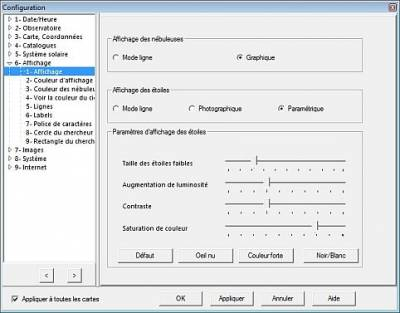
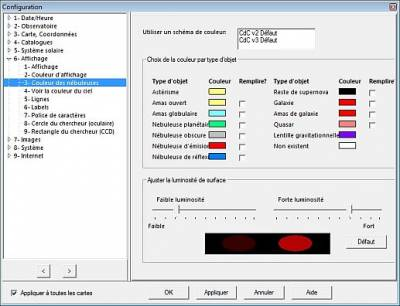
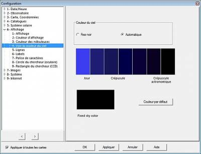
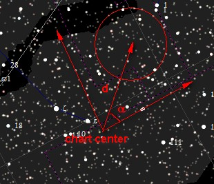
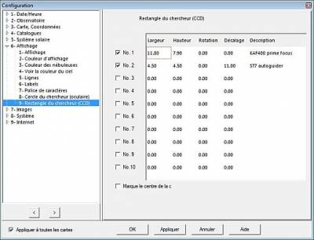

Presentació
El reglatge de la presentació té nou pestanyes:
Presentació
 Aparença dels estels i dels objectes de cel profund.
{kind=link}
Podeu mostrar el contorn (Mode línia) dels objectes de cel profund o la seva supefície (Gràfic).
Podeu mostrar els estels dibuixats mode línia, amb un aspecte fotogràfic simple mode fotogràfic o paramètric mode paramètric.
En el mode paramètric es pot escollir la mida aparent dels estels, la lluïssor, el contrast i la saturació de llurs colors. Aquests paràmetres existeixen en quatre combinacions preestablertes: Per defecte, Ull nu, Color intens i Blanc/negre.
Colors

Amb aquest menú, podeu canviar el color de les línies, graelles i objectes mostrats al mapa. Per fer-ho, feu clic sobre la figura en color de sota l'etiqueta corresponent. Llavors trieu el color amb un clic a la finestra de colors i finalment a “D'acord”.
La fila superior és per als estels, diferenciats per la seva relació B-V de magnitud. Les altres files us presenten objectes del sistema solar i línies de tota mena. Podreu canviar els colors de cel profund en la propera pestanya.
Dins del grup Color estàndard podeu triar un joc de colors predefinit: Per defecte que mostra els colors del mapa semblants als colors del cel real. Vermell passa a un mode de colors més adaptat a la visió nocturna (tons rogencs). Negre sobre blanc mostra el mapa en negre sobre fons blanc i Blanc sobre negre mostra el mapa en blanc sobre fons negre.
En els grups Botó per defecte i Visió de nit podeu definir el color dels botons de les barres d'eines segons estigui o no activat el botó Visió de nit en la barra principal.
Podeu configurar quins catàlegs es fan servir amb la pestanya Estels CdC des del menú Configuració → Catàlegs. Podeu fer que els estels es vegin o no, prement la icona  en la barra d'objectes.
La visió dels planetes, cometes, asteroides, eclíptica, equadors, horitzó i oculars pot activar-se o desactivar-se fent clic a les icones apropiades de la barra d'objectes en el grup objectes A o el grup objectes B.
en la barra d'objectes.
La visió dels planetes, cometes, asteroides, eclíptica, equadors, horitzó i oculars pot activar-se o desactivar-se fent clic a les icones apropiades de la barra d'objectes en el grup objectes A o el grup objectes B.
Color de cel profund

Els objectes de cel profund són força diferents entre ells. En aquest diàleg podeu fixar colors diferents per a cada tipus d'objecte per diferenciar-los millor en el mapa.
Podeu triar configuracions preestablertes seleccionant l'esquema de color, o fer la vostra pròpia configuració. Per canviar els colors, feu clic a la casella rectangular, i llavors trieu el color en la finestra emergent. També podeu canviar la proporció de brillantor superficial a mostrar.
Podeu configurar quins catàlegs es fan servir amb la pestanya Cel profund CdC des del menú Configuració → Catàlegs. Podeu fer que els objectes de cel profund es vegin o no, prement la icona  en la barra d'objectes.
en la barra d'objectes.
{kind=link}
Color del cel
 En aquest diàleg podeu escollir el color del fons del mapa. Si l'opció Fixat negre està escollida en el grup Color del cel, el fons del mapa té sempre el mateix color (El de Color del cel fix). Si el que s'ha elegit és Automàtic , el fons del mapa varia segons les hores del dia per indicar els crepuscles nàutic i astronòmic, o quan la Lluna està sobre l'horitzó.
{kind=link}
Si ho desitgeu podeu modificar tant el color fixat com el model de colors per als crepuscles, fent clic a cada color.
Podeu alternar el color cel cel fixat i l'automàtic configurat fent clic a la icona  del grup de marques en la barra d'objectes.
del grup de marques en la barra d'objectes.
Línies
 Ací podreu triar quines línies voleu que siguin mostrades en el mapa i escollir-ne el tipus de traçat:
Ací podreu triar quines línies voleu que siguin mostrades en el mapa i escollir-ne el tipus de traçat:
Mostra la graella de coordenades traça la graella del tipus de coordenades que tingueu definit en el menú Carta → Sistema de coordenades o bé en Configuració → Mapa, coordenades. Podeu afegir la graella equatorial activant la casella Afegeix la graella equatorial. Aquesta graella us serà d'utilitat si teniu el telescopi amb muntura equatorial. Mostra l'eclíptica i Mostra l'equador galàctic és prou clar. Valors a les graelles mostrarà etiquetes amb els valors en graus (o en hores i graus) de les línies coordenades.
En aquests quatre grups podeu escollir les possibilitats següents:
- Figura de les constel·lacions: Si Mostra les figures de les constel·lacions està marcat, CDC traçarà les línies que les dibuixen.
- Via Làctia: La casella Mostra la Via Làctia marcada n'activarà el traçat dels límits. Reomple la Via Làctia farcirà aquesta zona d'un color semitransparent.
- Límits de les constel·lacions: Els dibuixarà marcant Mostra els límits de les constel·lacions.
- Moviment propi: Cada estel té un moviment propi dins de la Via Làctia. Podeu activar el traçat d'aquest moviment per als xxxx anys vinents.
Una manera senzilla de fer que aquestes línies es mostrin o no, és amb les icones de la barra d'objectes o des del menú Carta → Línies/Graelles
Etiquetes

La casella a marcar Mostra les etiquetes controla totes les etiquetes llevat dels valors de les graelles de coordenades (controlades per Valors a les graelles en la pestanya Línies).
Si voleu veure les informacions del mapa en la barra del menú, marqueu Mostra les informacions de la carta en la barra del menú.
En el quadre Etiquetes dels objectes s'hi pot controlar el color i la mida dels tipus de lletra usats per a cada tipus d'objecte. Altra etiqueta Mostra les etiquetes dels punts cardinals sobre la línia de l'horitzó.
En els quadres Etiqueta dels estels i Etiqueta de les constel·lacions podreu triar el contingut de les etiquetes corresponents.
Diferència de magnitud són valors (0 a 10) que filtren les etiquetes segons la magnitud dels objectes.
Com més baix és el nombre, més etiquetes es veuen. Per entendre com funciona la quantitat d'etiquetes a mostrar: el valor de la magnitud dels objectes mostrats és menor que Número de magnitud límit del camp de visió - diferència de la magnitud d'etiquetatge. Exemple: Límit del camp de visió: 6, Diferència de la magnitud d'etiquetatge: 2. 6 - 2 = 4. Com a conseqüència, els objectes amb un número de magnitud més petit que 4 seran etiquetats, mentre que el objectes amb magnituds de 4 fins a 6 no ho seran.
Només es mostren etiquetes d'un sol catàleg alhora. L'ordre de precedència és de dalt a baix, tal com està llistat en la configuració dels catàlegs d'estels i els catàlegs de cel profund.
Es pot canviar el tipus de lletra de les etiquetes amb Configuració → Presentació → Tipus de lletres.
Podeu ampliar informació sobre la modificació d'etiquetes individuals aquí o sobre com afegir etiquetes personalitzades aquí.
Tipus de lletres
 Aquesta pestanya controla els tipus de lletres utilitzats per CdC. Per modificar-ne algun, feu clic sobre la icona Modifica a la dreta de la línia.
Aquesta pestanya controla els tipus de lletres utilitzats per CdC. Per modificar-ne algun, feu clic sobre la icona Modifica a la dreta de la línia.
Feu clic sobre el botó Per defecte per recuperar els tipus originals.
Oculars

Aquesta pestanya us permet definir el camp de visió (en minuts) dels vostres oculars i la seva posició. Per omissió, els oculars estaràn centrats en el mapa. Pot ser que us calgui tenir-los desplaçats, per exemple en cas de guiatge del telescopi. Ho podeu aconseguir configurant l'ocular indicant-hi el desplaçament respecte al centre del mapa (i oculars centrats). Llavors pot ser útil girar l'ocular. Rotació és l'angle (en graus) de l'eix X, paral·lel a l'equador celest i té d'origen el centre del mapa (que és la posició per defecte del centre del camp mostrat), i la nova posició de l'ocular. Decalatge és la distància (en minuts) entre el centre del mapa i el centre de l'ocular. El desplaçament no llegeix valors negatius. Useu un angle entre 90 i 270 graus per desplaçar cap el sud el camp de visió de l'ocular.

Una forma senzilla de fer que els oculars es mostrin o no és amb la icona  en la barra d'objectes o amb el menú Carta → Línies/Graelles → Mostra marca.
en la barra d'objectes o amb el menú Carta → Línies/Graelles → Mostra marca.
{kind=link}
Captadors CCD

Com per als oculars, aquesta pestanya permet definir el camp de visió dels vostres captadors CCD. El camp és un rectangle en el què l'alçada i l'amplada s'expressen en minuts. És paral·lel a l'equador celest, al centre del mapa. Rotació i Decalatge tenen el mateix significat que per als oculars.
Una forma senzilla de fer que els oculars o captadors CCD es mostrin o no és amb la icona en la barra d'objectes o amb el menú Carta → Línies/Graelles → Mostra marca.
{kind=link}